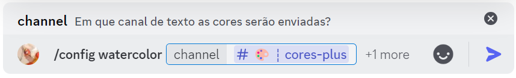
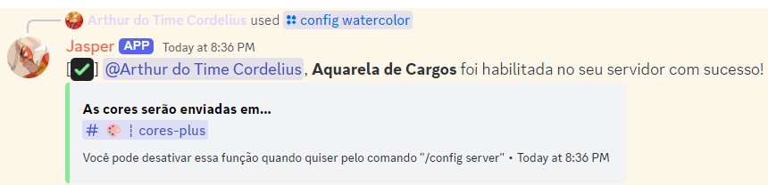
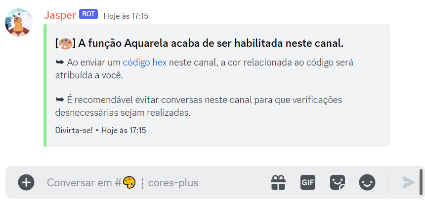
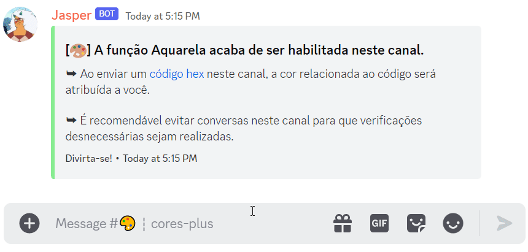
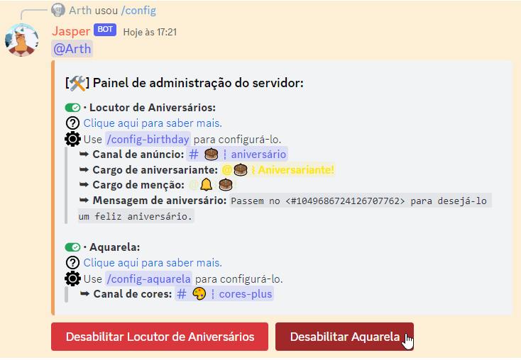

• Configurar essa funcionalidade é algo restrito aos membros do servidor com permissão de Administrador. Além disso, preciso ter a permissão de Gerenciar cargos no servidor para que ela funcione.
• Segue um pequeno tutorial de como configurá-la:
1. Use o comando /config-aquarela, selecionando o canal de texto
desejado. É recomendável criar um canal de texto especificamente para essa função.

2. Assim que usar o comando e a minha resposta for positiva, a funcionalidade já vai estar habilitada
no
seu servidor!

3. Uma outra mensagem de confirmação será enviada também no canal de texto escolhido, alertando que
todas mensagens que forem enviadas ali serão consideradas para definir a cor do cargo dos membros.

4. Para utilizar a Aquarela, você deverá enviar um código
hexadecimal (exemplo: #fcba03) no canal de texto.
Se o que for enviado for um código válido, um cargo específico para você será criado utilizando a cor desse
código e ele será movido para o topo da sua lista de cargos (isso se eu tiver permissão para interagir com
você!).
Se você já tiver um cargo de cor e enviou um código novamente no canal, a cor do seu cargo será
atualizada para o código mais recente.

5. Prontinho! A Aquarela já está habilitada no servidor. Para editar as configurações, basta
usar o comando /config-aquarela novamente. Para desabilitar, use o comando
/config e selecione o botão.

• Espero que você aproveite! Qualquer dúvida, sinta-se livre para perguntar no meu canal de suporte.